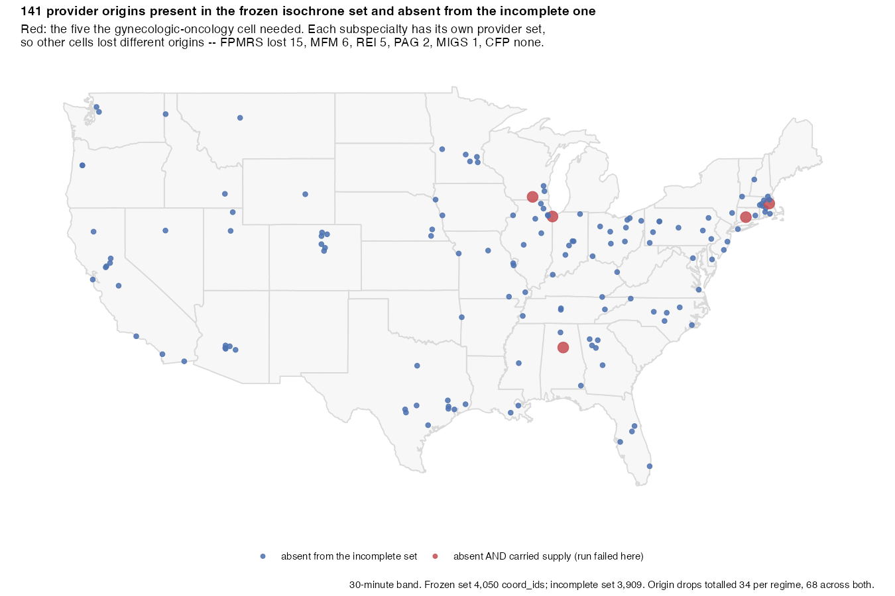

Standalone analysis and manuscript for national travel-time accessibility to the seven ABOG-certified obstetric and gynecologic subspecialties across the contiguous United States, 2013–2023, using an Enhanced Two-Step Floating Catchment Area (E2SFCA) method on road-network isochrones with a mass-conserving demand allocation and a Spatial Access Ratio (SPAR).
This repository was extracted from the larger isochrones pipeline (https://github.com/mufflyt/isochrones, private) so the accessibility paper builds and reproduces on its own, independent of the physician-distribution and workforce-cliff work. isochrones is the source of record that generates the road-network isochrones, the physician cohort, and the accessibility artifacts; twostep vends the small frozen subset those produce, so the manuscript renders with no network access — its only external code dependency is the mufflyaccess package (data lineage in docs/DATA_PROVENANCE.md).
What the analysis finds, in one figure

Population-weighted national access per 100,000 women, log scale, for all seven subspecialties across the full study window. The dashed line marks the 2019–2020 tract-vintage transition; a controlled seam analysis found geometry-only effects there to be negligible, and no smoothing is applied. The two-order-of-magnitude spread between maternal-fetal medicine and complex family planning is the motivating observation — and the reason the age-matched sensitivity analysis below exists, since these seven subspecialties do not serve the same population.
How this analysis is verified
Most accessibility papers ask whether the code runs. These layers ask whether the result could be believably wrong, which is a different question.
| layer | what it would catch | where |
|---|---|---|
| Published fixtures | the engine no longer implements the published method | Luo & Qi (2009), Delamater (2013) test suites |
| Three implementations | a defect that agrees with itself | production engine vs two independent reference implementations |
| Mutation corpus | a suite that would not notice a scientific error |
tools/ci/mutation_corpus.R — 17 named mutants, all killed |
| Scientific join doctrine | silently dropped, duplicated or zero-filled tracts, providers and years | fail-closed guards naming the offending IDs |
| Scientific-core coverage | an exported function no test ever calls |
tools/ci/scientific_coverage.R — found 10 untested exports |
| Cross-platform agreement | results that depend on the machine | three GEOS versions agree to 2e-16 |
| Manuscript quantifier guards | prose that drifted from the numbers it describes | “about one in five” must match the computed value or the render fails |
| Geography contract | an accessibility surface computed against an incomplete isochrone set |
tools/ci/check_frozen_isochrones.sh — four SHA-256s, gated before the first panel year |
| Specification curve | conclusions that depend on one modelling choice |
inst/multiverse/ — prespecified and hash-frozen |
| Input pinning by hash | the analysis silently run against the wrong copy of an input |
tools/ci/check_frozen_isochrones.sh — nine isochrone sets exist; only the hash tells them apart |
| Supply conservation | a provider whose catchment is missing vanishing from the numerator |
tools/ci/check_supply_conservation.R — n_iso_origins == n_supply_origins, every cell |
| Release audit | a freeze declared from four workflow runs reconciled by hand |
tools/ci/release_audit.sh — all 23 gates, one verdict |
Two things worth stating plainly, because they are results rather than advertising:
-
The specification curve falsified a manuscript claim. The rural–metropolitan disparity holds in all seven specifications; the American Indian/Alaska Native contrast does not — it reverses for complex family planning under flatter decay and under M2SFCA, where the primary estimate sits 2.5% from parity. The abstract was corrected accordingly.
 Specification curve: AIAN-White area disparity
Specification curve: AIAN-White area disparityThe reversal is visible rather than asserted: CFP (pink) crosses the parity line under S03 (slower decay) and S07 (M2SFCA). Every other subspecialty stays below it in every specification, and the primary analysis S01 is shaded.
 Specification curve: rural-metropolitan disparity
Specification curve: rural-metropolitan disparityThe rural–metropolitan contrast is the control case. C2 is
all(rural_metro_ratio < 1), and the whole y-axis tops out near 0.7 — every subspecialty is rural-disadvantaged in every specification, by a wide margin. Note the dashed line here is the manuscript’s 0.5 threshold, not parity: PAG sits above it under several specifications, and under slower decay (S03) most subspecialties do. That is a claim about magnitude, not about direction, and it is the reason the two curves need reading against their own reference line rather than against each other. Three load-bearing artifacts have no record of the inputs that produced them.
tools/ci/check_artifact_provenance.Rreports this rather than failing, because the inputs are not currently recoverable. It is a known gap, not a solved problem.
The geography contract
The accessibility surface is only as complete as the isochrone set behind it, and a wrong set is indistinguishable from the right one by name, path or file size. So the set is pinned by hash, not by location: inst/multiverse/frozen_isochrones.sha256, enforced by tools/ci/check_frozen_isochrones.sh before the first panel year runs.
This is not hypothetical. A local directory carried 3,909 provider origins where the frozen set carries 4,050:

The 141 missing origins are nationally distributed, not a regional artifact. Which of them mattered depended on the cell: each subspecialty has its own provider set, so the drops are per-cell rather than a partition of one shared list. The five marked red are the ones the gynecologic-oncology cell needed — 7 of its 890 supply units, 0.787%, which with unmatched_supply_policy = "drop" vanished silently and put that cell 0.786% below the frozen value while the run reported success. FPMRS lost 15 origins, MFM 6, REI 5, PAG 2, MIGS 1, CFP none: 12 of 14 cells, 34 origin-drops per regime and 68 across both.
Relative shortfall was largest where the provider set was smallest — PAG 3.54% and FPMRS 2.17% against the corrected value, against GO’s 0.79% — which is why PAG and MIGS exchanged rank once the supply was restored.
Nine isochrone directories existed across the analysis machine and an attached drive. None of them matched the frozen hashes; two were byte-identical to each other and both were the short set. The frozen set was recovered from S3. That is the argument for hashing rather than repointing: a corrected path fixes one day’s mistake, a hash makes the class of mistake unavailable.
C2 and C3 survived the correction unchanged. The subspecialty ordering did not — see docs/APPENDIX_FROZEN_ISOCHRONE_SSOT.md for the full account and artifacts/multiverse/age_matched_correction_diff.csv for all 136 affected quantities.
To fetch a working copy and prove it is the right one before trusting it:
aws s3 sync s3://tyler-valhalla-tiles/seam_run/inputs/isochrones/ "$E2SFCA_ISO_DIR"
bash tools/ci/check_frozen_isochrones.sh "$E2SFCA_ISO_DIR"mufflyaccess (≥ 0.10.0) also serves the set as a single source of truth — verify_frozen_isochrones(), use_frozen_isochrones(), frozen_isochrones_dir() and frozen_isochrones_provenance(), backed by the same manifest and by canonical S3 and Dropbox copies. E2SFCA_ISO_DIR still works, but it is now verified rather than trusted: the old contract was “tell me where it is and I will believe you,” which is exactly how the wrong set got used.
Learn the method
A worked four-tract, two-provider example — small enough to check by hand — is in the vignette:
vignette("e2sfca-accessibility", package = "twostep")It covers the two steps, why nested band weights must be subtracted rather than used directly, the conservation identity that any correct surface satisfies, why an unreached tract is NA rather than zero, and how the package refuses ambiguous joins instead of quietly repairing them. It uses no external data, so it runs anywhere the package installs.
Workforce counts, the URPS contract, and year handling
Table 1’s provider counts and standardized supply are derived from the frozen E2SFCA national summary (e2sfca_national_summary.csv) by the method’s conservation identity, n = mean_per_100k × ACS_female_pop ÷ 100,000; the loaders in scripts/manuscript_e2sfca_values.R re-derive and cross-check them against that frozen run (fail-closed on any disagreement > 1).
The urogynecology and reconstructive pelvic surgery (URPS) cross-reference footnote reports the canonical board-certified-active workforce served by mufflyaccess (≥ 0.10.0, contract v3.0.0) via mufflyaccess::urps_count(): 1,306 nationally and 1,303 in the contiguous United States for 2023. twostep is a consumer of that contract, not its owner.
Several distinct years appear in this paper and are not interchangeable — the README and manuscript name the year explicitly rather than saying “current”:
| Quantity | Year | Source |
|---|---|---|
| Headline active workforce + standardized supply (Table 1) | 2020 | frozen E2SFCA national summary |
| Spatial-distribution / disparity analysis (Table 2, Figures 3–6) and the Figure 1 image | 2020 | 2020-vintage frozen artifacts |
| ACS demand denominator | ACS 2020 | 2020 tract vintage; ACS 2020 |
| Temporal-change window (Table 1 “Change” column, trend analyses) | 2013–2022 | 2023 is right-censored and reported provisionally |
| URPS board-certified-active workforce (cross-reference) | 2023 |
mufflyaccess::urps_count() (1,306 national / 1,303 CONUS, include_urology = TRUE) |
Age-matched demand denominators
The primary analysis indexes all seven subspecialties to the same denominator — the total female population of all ages. That is a deliberate, comparable choice, but it is not the population each subspecialty plausibly serves: a pediatric/adolescent gynecologist is measured against a population 76% of which is outside their age window, and a minimally invasive gynecologic surgeon against one only 18% outside. A sensitivity analysis, not a replacement, re-indexes each subspecialty to its own age range.

Three things are comparable across the two regimes, and each gets a panel. A is the mechanism: the share of the all-ages female population each age window retains, from 82% (MIGS, 15 and over) down to 24% (PAG, under 20). B is the result: rural:metropolitan and AIAN:White contrasts are dimensionless, so they can be compared — and both disparities persist, moving by at most 1.56%. C is claim C5: levels are not comparable across regimes (halving a denominator roughly doubles the value, which is arithmetic and not a finding), but rank is, and four of seven subspecialties change rank.
The panel covers all 154 cells (7 subspecialties × 11 years × 2 regimes) at artifacts/2sfca/agematched_panel/age_matched_panel.csv, with provenance.json recording the manifest, runner, engine and per-year input hashes. It is the sole source for every age-matched number in the manuscript, the appendix and this figure; tools/ci/check_agematched_ssot.R fails if any live consumer reads the older standalone 2020 file instead.
Status and open items
RESOLVED (2026-08-25): the age-matched analysis ran against the wrong isochrone set. Supply for providers whose catchment was missing was silently dropped, understating access in 12 of 14 cells and changing the C5 ordering. The runner now fails closed, the input is pinned by hash, and every committed cell must satisfy
n_iso_origins == n_supply_origins. Full account indocs/APPENDIX_FROZEN_ISOCHRONE_SSOT.md.tools/ci/check_artifact_provenance.Ris still non-strict. Three load-bearing artifacts have no record of the inputs that produced them. It reports rather than fails because those inputs are not currently recoverable. A known gap, not a solved problem.manuscript/figures/figS10_satellite_clinics.jpgis orphaned — on disk, referenced by no document, and absent fromFIGURE_PROVENANCE.csv.-
RESOLVED (2026-08-16): Figure 1 and Table 1 now agree at 2020. This entry previously warned that Table 1’s headline had moved to 2022 while Figure 1 (
manuscript/figures/fig0_level2020.jpg) remained the 2020 surface, so the two would disagree. The manuscript’s cross-sectional headline is now 2020 throughout — Table 1, Table 2 and Figure 1 — with 2013–2022 used only as the temporal-change window. The mismatch no longer exists.It is also now mechanically enforced:
tools/ci/check_manuscript.Rparses the Figure 1 and Table 1 captions out of the rendered HTML and fails if the two years disagree. It runs on every render, in the nightly, and in the pull-request scientific gate, so this class of mismatch cannot silently return. The detailed disparity analysis remains 2020. Table 2 (% outside 60/120/180 min; Gini), Figures 3–6, and their Results prose are computed on the 2020 spatial artifacts and are labeled 2020. They are unaffected by the Table 1 headline move and stay 2020 unless and until they are regenerated.
Figures
These are the figures the manuscript renders (shipped in manuscript/figures/ and embedded by the render). Every figure was generated in the upstream isochrones pipeline and staged into this repo; which script produced each figure, from which data, and on what day is documented in docs/FIGURE_PROVENANCE.md (machine-readable copy at manuscript/figures/FIGURE_PROVENANCE.csv). Note the file name does not match the figure number (for example Figure 5 is fig4_gotrends.jpg); resolve by that table. Figure 3 is generated by a twostep-native script (scripts/figure3_allsubspec_stratified_2020.R) and two more generators are vendored in scripts/ (Figures 2 and 4); the remaining four are isochrones-only. The seven supplemental per-subspecialty access-change maps (Figures S1 to S7) are shown under Supplemental figures below and in the rendered HTML.
Figure 1. Potential accessibility to each of the seven OB/GYN subspecialties, 2020 (per 100,000 women). Still the 2020 surface; pending regeneration to 2022 — see Status and open items.

Figure 2. National potential accessibility by subspecialty (population-weighted mean and distribution).

Figure 3. Potential accessibility in 2020 to all seven OB/GYN subspecialties, by (A) rurality and (B) race and ethnicity (population-weighted per 100,000 women).

Figure 4. Access for disadvantaged groups relative to their reference group, across all seven subspecialties (equity heatmap).

Figure 5. Trends in gynecologic oncology accessibility disparities, 2013 to 2023.

Figure 6. Change in the share of (A) rural and (B) American Indian or Alaska Native residents with zero modeled access.

Figure 7. Change in potential accessibility by subspecialty, 2013 to 2023.

Supplemental figures (S1 to S7)
Per-subspecialty access change, 2013 to 2023 (Figures S1 to S7). Both endpoints are computed on a single 2020 grid and demand so the difference isolates the change in the active workforce, not the demand denominator. These also render in the manuscript HTML.
Figure S1. Gynecologic oncology, access change 2013 to 2023.

Figure S2. Maternal-fetal medicine, access change 2013 to 2023.

Figure S3. Reproductive endocrinology and infertility, access change 2013 to 2023.

Figure S4. Urogynecology and reconstructive pelvic surgery (URPS), access change 2013 to 2023.

Figure S5. Minimally invasive gynecologic surgery, access change 2013 to 2023.

Figure S6. Pediatric and adolescent gynecology, access change 2013 to 2023.

Figure S7. Complex family planning, access change 2013 to 2023.

Distribution: GitHub/Zenodo, not CRAN
Decided 2026-08-16. twostep is released through GitHub and archived via Zenodo. It is deliberately not targeted at CRAN.
The reason is a hard one rather than a preference. twostep Imports: mufflyaccess, the shared single-source-of-truth package that owns the drive-time bands, geography constants, denominators and the URPS workforce contract. mufflyaccess is public but lives on GitHub, and DESCRIPTION resolves it through Remotes: mufflyt/mufflyaccess. CRAN does not accept Remotes, and will not accept a package whose dependency is not itself on CRAN. Only three things would change that:
- publish
mufflyaccessto CRAN first, or - vendor its constants into twostep, which recreates exactly the cross-repo drift the shared package exists to prevent and which the SSOT guards in
tests/testthat/are built to catch, or - drop the dependency and hard-code the constants, which is option 2 with the guards removed.
None of those is worth doing for a manuscript-companion package. The scientific argument beats the packaging convenience: one authoritative definition of a drive-time band shared across isochrones / twostep / cliff is the property this codebase most needs to keep.
Practically, this costs nothing. remotes::install_github() and pak both honour Remotes, and renv::restore() installs the pinned commit recorded in renv.lock, so a reproduction from a clean clone is exact. See Installation for the commands.
R CMD check is nonetheless kept at Status: OK and runs nightly across Ubuntu (release, oldrel-1, devel), macOS and Windows. Not shipping to CRAN is a distribution decision, not permission to let the package rot.
Reproduce the manuscript
The rendered paper is published as a release asset, not committed to the repository. Download e2sfca_accessibility_manuscript.html (self-contained; open it directly in a browser) or the .docx from the latest release. Each release’s assets were rendered from that tag, after verifying every consumed artifact against SHA256SUMS.txt, and passed the manuscript semantic QA below.
To build it yourself instead:
# from the repo root — one time, to install the exact pinned package versions
Rscript -e 'renv::restore()'
# then render
Rscript render.R
# -> manuscript/e2sfca_accessibility_manuscript.html (self-contained)
Rscript render_docx.R
# -> manuscript/e2sfca_accessibility_manuscript.docxBoth outputs are gitignored. They are build products of the .Rmd plus the frozen artifacts, they weigh about 20MB together, and tracking them meant every render produced a 20MB binary diff. (The previously committed copies remain in git history: untracking them stops new blobs accruing, it does not shrink an existing clone.)
The render is checked nightly, not only at release: the manuscript job in .github/workflows/nightly.yml renders the paper and runs tools/ci/check_manuscript.R, which scans the visible prose for bare NA/NaN/Inf, R error text, absolute developer paths, unresolved citations, missing figures or tables, and a disagreement between the Figure 1 and Table 1 caption years. A render that exits 0 is not the same as a paper that reads correctly.
Package versions are pinned in renv.lock (renv activates automatically via .Rprofile), so the render and tests are hermetic down to the package version. The render uses rmarkdown, knitr, kableExtra, dplyr, tidyr, purrr, tibble, readr, jsonlite, here, and the shared single-source-of-truth package mufflyaccess (public, pinned in renv.lock), which supplies the shared band/geography/denominator constants and the 2023 URPS workforce cross-reference; the tests add testthat, sf, terra, exactextractr, checkmate, rprojroot, and the HAC trend producer uses sandwich/lmtest. renv::restore() installs all of these, including mufflyaccess from GitHub, so no manual setup is needed and no other network access is required at render time. All manuscript inputs are the small CSV/RDS/JSON files under artifacts/2sfca/**, manuscript/data/, and the figures under manuscript/figures/.
Run the method tests
The 25 test files (765 checks) pin the engine’s analytic behavior (E2SFCA vs M2SFCA, the distance-decay weights, zero-demand NA semantics, SPAR, and the population-weighted disparity estimators), the single-source-of-truth constants and their agreement with the shared mufflyaccess package, the frozen-run provenance guards, and the consumer-contract and non-normative-access-language guards. They use inline fixtures only (no network or external data).
Layout
manuscript/ e2sfca_accessibility_manuscript.Rmd + bibs + green-journal.csl + figures/ + data/
R/ two_step_floating_catchment.R (engine), accessibility_stratification.R (stats SSOT), utils/
scripts/ manuscript_e2sfca_values.R (canonical loaders used by the Rmd) + analysis/figure scripts
artifacts/ frozen E2SFCA run outputs the manuscript reads (run e2sfca_20260712_190734)
docs/ RUNBOOK_E2SFCA_ACCESSIBILITY.md
tests/ testthat suite for the engine + stratification SSOTMethod sources
Every function in R/two_step_floating_catchment.R carries a @references tag; the module header has the full citation sheet (Luo & Wang 2003; Luo & Qi 2009; Delamater 2013 M2SFCA; Wan et al. 2012 SPAR; McGrail 2009/2012; Apparicio et al. 2017; and others) mapped to the function each grounds. docs/RUNBOOK_E2SFCA_ACCESSIBILITY.md documents the production run, gates, and frozen facts.
Provenance and scope
-
Frozen run:
e2sfca_20260712_190734(raster engine, 500 m EPSG:5070, 77/77 subspecialty-year cells, conservation to 1e-14). Every frozen artifact used by the manuscript, its provenance, and what it feeds are documented indocs/DATA_PROVENANCE.md; their SHA-256 checksums are pinned inSHA256SUMS.txt(shasum -a 256 -c SHA256SUMS.txt). -
Analysis scripts vs manuscript: the manuscript reproduces from the frozen output artifacts here. The heavy generation scripts (
scripts/run_2sfca.R,sensitivity_e2sfca_2020.R, the map/seam scripts) are included for provenance but consume upstream pipeline inputs (isochrones, the year-cohort panel, ACS bundle) that are not shipped in this repo; they document how the artifacts were produced rather than re-running end to end here. -
Upstream pipeline (source of record): the frozen artifacts, and the inputs the generation scripts consume, are created and maintained in the isochrones pipeline (https://github.com/mufflyt/isochrones, private; source commit
ff3aac4a). twostep vends a frozen, checksummed subset of that pipeline’s output; you do not need access to isochrones to reproduce the manuscript from this repo. -
Regenerating the shipped outputs: the scripts that produced twostep’s committed artifacts/figures are now included, so outputs are regenerable rather than only frozen, e.g.
scripts/spatial_outcomes_2020.R->spatial_outcomes_2020.csv,scripts/map_equity_heatmap.R, andscripts/map_allsubspec_allyears_access_surface.R. The per-subspecialty E2SFCA access-surface maps are inartifacts/2sfca_seam/figures/, andscripts/check_wordcount.Raudits the rendered main-text word count. Like the other generation scripts, most consume upstream inputs not shipped here (see the analysis-scripts note above). - Geographic scope: contiguous U.S. (48 states + DC). Alaska and Hawaii are outside the road-network modeling framework; see the manuscript’s limitations.
Installation
# install.packages("remotes")
remotes::install_github("mufflyt/mufflyaccess") # required dependency
remotes::install_github("mufflyt/twostep")The package carries an renv lockfile. Running R CMD INSTALL or Rscript from inside the repository activates that isolated library, which will not contain your other packages; install from the parent directory, or set RENV_CONFIG_AUTOLOADER_ENABLED=FALSE, if dependencies appear to be missing.
This is the most common false alarm against this repo. If Rscript tests/testthat.R fails with “there is no package called ‘here’”, or R CMD check reports dplyr/sf/terra/exactextractr/mufflyaccess as unavailable, the packages are almost certainly installed and simply hidden: the .Rprofile has pointed .libPaths() at an empty project library. Either
RENV_CONFIG_AUTOLOADER_ENABLED=false Rscript tests/testthat.R # use your own library
Rscript -e 'renv::restore()' # or populate the project oneEvery CI job sets RENV_CONFIG_AUTOLOADER_ENABLED: false for this reason, except the nightly renv-restore job, which exists precisely to prove renv.lock still restores and passes on a clean machine. Note that renv::restore() builds KernSmooth from source, so it needs a Fortran compiler (gfortran); without one the restore fails on macOS while CI, which has the toolchain, succeeds.
Vocabulary guard
The package refuses normative language on accessibility results, because an accessibility surface without a defensible demand target cannot support claims about adequacy:
ACCESS_FORBIDDEN_TERMS
#> "shortage" "surplus" "adequacy" "adequate" "inadequate" "unmet need" ...
assert_access_language("Counties with an inadequate supply") # stops
assert_access_language("Modeled accessibility by county") # passesWire it into the render, not into a review checklist — it is cheap to call on every caption, legend title and layer name before a figure is written.
How to cite
citation("twostep")CITATION.cff and CITATION.bib carry the same entry for GitHub and reference managers. ORCID 0000-0002-2044-1693.
Licence
MIT — see LICENSE.md.
Related
| Package | Owns |
|---|---|
mufflyaccess |
constants and safe arithmetic: bands, CONUS geography, safe_rate()
|
isochrones |
routing, water masks, the isochrone pipeline (source of record) |
mysterymaps |
map construction |
cliff |
workforce retirement modelling |